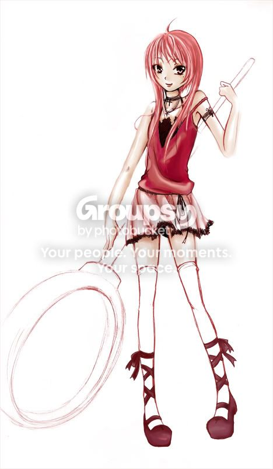

ติชมหน่อยค่ะ [ยังไม่เสร็จ]-(ไม่เกี่ยวกับeco)
รูปนี้ดองนานละ ว่าจะลงให้เสร็จไม่ได้ลงซะที 
อยากให้ช่วยดูว่ามีอะไรขัดหูขัดตา หรือผิดพลาดตรงไหนมั้ย
ขอบคุณล่วงหน้านะคะ
//กลิ้งลงหลุม
* ลิงค์สำหรับคนรูปไม่ขึ้นค่ะ
http://i659.photobucket.com/albums/uu31 ... -2-2-2.jpg
อยากให้ช่วยดูว่ามีอะไรขัดหูขัดตา หรือผิดพลาดตรงไหนมั้ย
ขอบคุณล่วงหน้านะคะ

//กลิ้งลงหลุม
* ลิงค์สำหรับคนรูปไม่ขึ้นค่ะ
http://i659.photobucket.com/albums/uu31 ... -2-2-2.jpg
 เรายังไม่ได้ขนาดนี้เลย
เรายังไม่ได้ขนาดนี้เลย